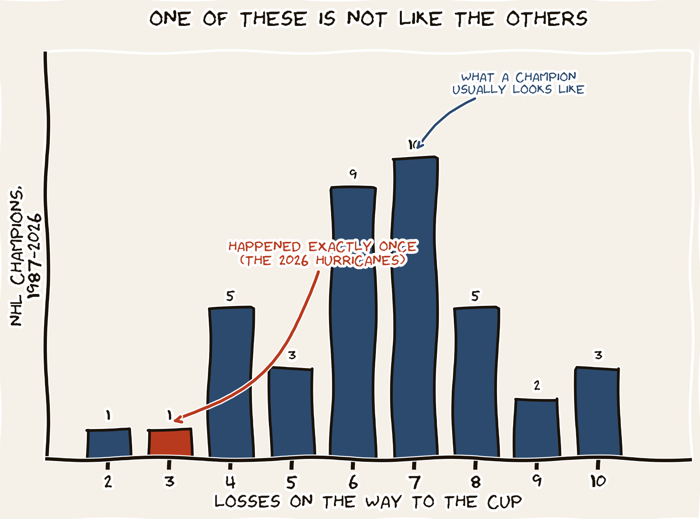

Two Trophies. Same Record. Twenty-Four Hours Apart.

Sunday night, the Knicks closed a fifty-three-year drought. Monday night, the Hurricanes closed a twenty-year one. Both teams finished their playoff runs at sixteen wins and three losses. The same coincidence appeared on Knicks subreddits and Carolina message boards within the same hour. They’re the same number. The word "destiny" trended.
We are in the destiny-debunking business. So we ran the base rate.
The shape of the question
Both the NBA and the NHL have used the same playoff architecture since 1987: four rounds, each best-of-seven. A champion must win exactly sixteen games. The number of losses, however, is free to vary. A team that runs the table 4–0, 4–0, 4–0, 4–0 finishes 16–0. A team that grinds out every series in seven games finishes 16–12. Most champions land in the middle.
Sixteen-and-three is one specific outcome out of about a dozen plausible ones. The Knicks happened to land there. So did the Hurricanes. The question is how often we should expect that.
One methodological note before the histograms: from 1984 through 2002 the NBA’s first round was best-of-five, so champions in that era needed only fifteen wins, not sixteen. The apples-to-apples era for direct comparison is therefore 2003 through 2026 — twenty-three years in which both leagues required exactly sixteen wins.
The base rate, one league at a time
Here is the distribution of how many losses each league’s champion absorbed on their way to the trophy. The NBA panel is the twenty-four NBA champions from 2003 through 2026. The NHL panel is the thirty-nine NHL champions from 1987 through 2026 (the 2005 season was lost to a lockout and is excluded).
The NBA shape is heavily skewed toward 16–7, the record of a champion who got pushed about as much as a champion realistically does. Eleven of the twenty-four NBA champions in this era went 16–7. Three losses across the entire playoffs is at the dominant end: it has happened twice in twenty-four years.
The NHL shape is similar but a touch fatter on the high-loss side, because hockey playoffs are weirder. Goalies get hot, third-line forwards score in overtime, the team that took two regular-season meetings somehow drops a 2–0 first-round lead. Of the thirty-nine NHL champions since 1987, only one finished sixteen and three. That is the 2026 Hurricanes. We will return to that number.
When have both leagues’ champions matched, exactly?
Now combine. For each year in the apples-to-apples era, compare the NBA champion’s W–L to the NHL champion’s W–L. How often does the pair match exactly? Three times in twenty-three comparable years.
| Year | NBA | Record | NHL | Record |
|---|---|---|---|---|
| 2004 | Pistons | 16–7 | Lightning | 16–7 |
| 2025 | Thunder | 16–7 | Panthers | 16–7 |
| 2026 | Knicks | 16–3 | Hurricanes | 16–3 |
Two of those matches are at 16–7. That is the record produced by the most common shape of a dominant-but-pushed champion in both leagues. When champions match, they usually match at the league’s modal record. That is unsurprising: the modal record is the modal record because it is what champions usually have.
2026 is the outlier. It is not just a match. It is a match at a record that has happened once in the entire history of the NHL’s 16-win era. The Hurricanes are the first NHL team to ever finish sixteen and three, and they did it in the same week the Knicks also finished sixteen and three.
If you treat the two champion’s records as independent — and they should be; the Knicks did not affect the Hurricanes’ bracket and vice versa — the joint probability of both arriving at sixteen and three in any given year is roughly (2 in 24) for the NBA times (1 in 39) for the NHL, or about 0.21 percent. One year in every four hundred and seventy.
Same record. Twenty-four hours apart. The math says: surprising, sure. Destiny, no.
— The Sports PageWhat is and isn’t a coincidence here
The timing is not a coincidence. The NBA Finals and the Stanley Cup Final both wrap up in mid-June every year, every year, every year. They typically end within a week of each other. The fact that one trophy was raised on Sunday and the other on Monday is normal scheduling, not cosmic alignment.
The matching record is partly a coincidence and partly inevitable. Champions in both leagues cluster around the modal records of their league. Once-per-decade matches are baked into the structure of having two parallel leagues with the same playoff architecture. We have three such matches in twenty-three years. That is roughly once every eight years — not the kind of math that justifies the word "destiny."
The sixteen-and-three part is the genuinely surprising piece. A specific match at a specific record, where one of the leagues had never produced that record before. If you ran a simulation of the modern playoff era forward another four hundred years, you would expect to see this exact pairing roughly one more time. We got it now.
The droughts ending together is not even a little bit a coincidence. The Knicks last won in 1973, fifty-three years ago. The Hurricanes last won in 2006, twenty years ago. There is no statistical mechanism by which one drought ending raises the probability that another drought ends. The brain edits the two stories into one narrative because two stories at once are harder to hold than one composite story. That editorial cut feels like meaning. It is not meaning. It is editing.
The civic-mission beat
When you encounter a coincidence in any data, the wrong question is "what are the odds." The right question is "compared to what." Without a base rate, every coincidence looks miraculous, because every coincidence is the one event you noticed out of millions you did not. If you tracked every possible record match in every possible pair of sports every year, some of them would line up every year. The brain edits out the misses and keeps the hits, and the editorial cut feels like cosmic alignment.
The Knicks won a championship. The Hurricanes won a championship. They were two of the best teams in their respective sports this year, and they each finished sixteen and three because each is what a dominant team that loses a few games looks like. The droughts ending is the real story. The matching record is a small statistical curiosity. The destiny is just narrative.
The math is patient. It does not need destiny. It does not need the universe to mean something. It just needs the base rate.